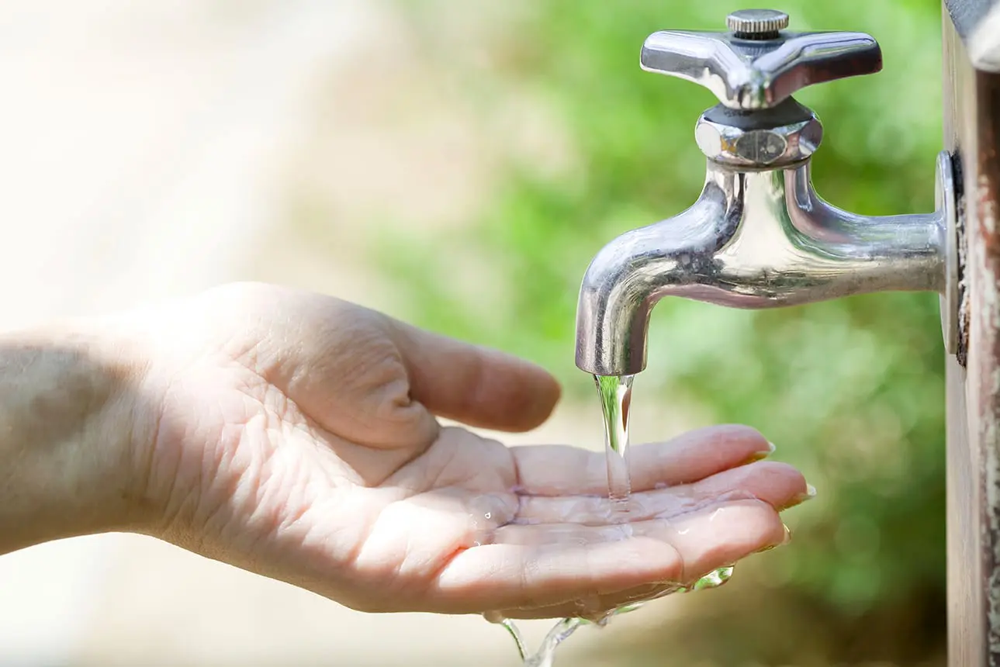

üåç Stop Pollution: Join Us for a Greener Future üå±
Pollution is one of the biggest threats to our planet. Together, we can
take action to reduce waste, promote cleaner air, and safeguard our
environment. Let's fight pollution for a healthier world!
What we do to Stop air pollution üöó?
Air pollution is a major threat to our health and environment. It harms
the air we breathe, contributing to respiratory diseases and climate
change. By reducing emissions, using cleaner energy, and planting trees,
we can improve air quality and protect our future. Let's act now for
cleaner air!
1. Transition to Clean Energy üå±:
Shifting from fossil fuels to renewable energy sources like solar,
wind, and hydroelectric power is crucial for reducing greenhouse gas
emissions and combating climate change. By investing in clean energy
infrastructure, we can significantly cut pollution levels and reduce
our reliance on non-renewable resources, ensuring a more sustainable
and eco-friendly future. Solar panels harness the sun’s energy to
generate electricity, wind turbines convert wind power into usable
energy, and hydropower uses water flow to generate electricity, all
of which have minimal environmental impact compared to fossil fuels.
Transitioning to clean energy also helps reduce air and water
pollution, creates green jobs, and boosts economic growth by
fostering innovation in technology and energy production. As we make
the shift towards renewable energy, we can reduce our carbon
footprint, protect ecosystems, and create a healthier, more
sustainable world for future generations to thrive in.
Learn More
2. Promote Public Transportation and Green Vehicles üöç‚ö°:
Encouraging the use of public transportation, such as buses, trains,
and trams, can significantly reduce the number of vehicles on the
road, leading to lower emissions and less air pollution. Public
transit systems are more energy-efficient, helping to decrease
traffic congestion, reduce carbon footprints, and lower the overall
demand for fuel. Additionally, promoting green vehicles, such as
electric ⚡ or hybrid cars, is a key step in reducing the harmful
pollutants released by traditional gasoline-powered vehicles. These
vehicles produce fewer emissions, reducing the environmental impact
while offering cleaner alternatives for daily commutes. Building and
expanding infrastructure for electric vehicle charging stations and
bike lanes üö≤ also supports sustainable travel options. By choosing
eco-friendly transportation options, we can help create a healthier,
more sustainable environment for everyone while combating climate
change and improving air quality.
Get Involved

3. Reduce Industrial Emissions üåç:
Industrial emissions are a major source of air pollution,
contributing to environmental degradation and climate change. To
combat this, industries should adopt cleaner technologies, such as
renewable energy sources (solar, wind, or hydroelectric power) and
energy-efficient systems. Implementing carbon capture and storage
(CCS) technologies can help capture harmful gases like carbon
dioxide before they are released into the atmosphere. Additionally,
enforcing strict environmental regulations, conducting regular
audits, and promoting sustainable production practices can drive
industries to reduce harmful emissions. Switching to green
manufacturing processes, recycling waste materials, and investing in
cleaner production techniques further minimize the environmental
footprint. Collaboration with governments to implement policies that
incentivize emissions reduction, such as carbon credits or tax
rebates for green practices, also plays a vital role. By reducing
industrial emissions, we can create a cleaner, healthier planet for
future generations.
Take Action
4. Plant Trees and Increase Green Spaces üå≥:
Trees play a crucial role in improving air quality, reducing carbon
dioxide levels, and promoting overall environmental health. Planting
trees and expanding green spaces in urban and rural areas can
significantly combat air pollution and mitigate the effects of
climate change. Trees act as natural filters by absorbing harmful
pollutants like sulfur dioxide, ammonia, and nitrogen oxides, which
are common in polluted air. Additionally, green spaces provide
habitat for wildlife, promote biodiversity, and offer psychological
and physical benefits to communities. To make a lasting impact, it's
essential to encourage large-scale tree planting initiatives, create
urban green spaces like parks and gardens, and protect existing
forests. Governments, organizations, and individuals should work
together to promote reforestation efforts and integrate more green
areas into city planning. By planting trees and increasing green
spaces, we can contribute to cleaner air, a healthier ecosystem, and
a more sustainable planet.
Explore Solutions
5. Use Eco-Friendly Vehicles üöóüå±:
Choosing eco-friendly vehicles is a crucial step in reducing air
pollution and promoting sustainability. Electric vehicles (EVs) and
hybrid cars emit fewer pollutants than conventional gasoline-powered
cars, helping to reduce harmful greenhouse gases and improve air
quality. By driving an eco-friendly vehicle, you are reducing your
carbon footprint and contributing to the fight against climate
change. Carpooling üöó, using public transportation üöå, or opting for
electric bikes üö≤ further decreases the number of vehicles on the
road, helping to reduce traffic congestion and pollution.
Maintaining your vehicle properly, such as ensuring regular
maintenance, tire inflation, and using fuel-efficient driving
habits, can also reduce emissions. Supporting the development of
electric vehicle infrastructure, such as charging stations and
incentives for purchasing green cars, helps make sustainable
transportation more accessible. By switching to eco-friendly
vehicles, we can reduce pollution, conserve resources, and help
build a cleaner, greener future.
Join the Movement
What we do to Stop Water Pollution üíß?
Water Pollution is a critical threat to our health and ecosystems. It
contaminates our rivers, lakes, and oceans, harming aquatic life and
making water unsafe for consumption. By reducing industrial waste, using
eco-friendly products, and promoting proper waste disposal, we can
protect water quality and secure a healthier future. Let’s take action
now to prevent water pollution and ensure clean water for all!
1.Reduce Plastic Use üåçüíß:
Plastic pollution is one of the biggest threats to our oceans and
waterways, with millions of tons of plastic waste ending up in our
environment every year. By reducing plastic use, we can make a huge
impact on water pollution. Start by avoiding single-use plastic
items like straws, bottles, and bags, and choose reusable
alternatives made from glass, metal, or fabric. When shopping, opt
for products with minimal plastic packaging or eco-friendly options.
Recycling is key—ensure plastic items are properly disposed of, so
they can be reused instead of polluting our landfills or rivers.
Support businesses committed to reducing plastic waste and encourage
your community to join local clean-up events. By making small,
mindful changes in our daily lives, we can collectively reduce
plastic waste, protect marine life üêü, and preserve the health of
our oceans üåä for future generations. Let‚Äôs be part of the solution!
Learn More

2. Support Sustainable Agriculture üåæ:
Sustainable agriculture focuses on farming practices that protect
the environment, promote biodiversity, and maintain the health of
the soil. By supporting sustainable farming, we reduce harmful
chemical use, preserve water resources, and help protect ecosystems.
This includes practices like crop rotation, organic farming, reduced
pesticide usage, and the integration of livestock and plant systems
to create a balanced ecosystem. Sustainable farming also emphasizes
the importance of local food systems, reducing the need for
transportation and lowering carbon footprints. Consumers can support
sustainable agriculture by buying locally grown, organic produce ü•ï,
choosing products from farms that prioritize environmental
stewardship, and advocating for policies that promote sustainable
farming practices. By making these conscious choices, we ensure
healthier soil, cleaner water, and a safer environment for future
generations. Supporting sustainable agriculture is a powerful step
toward safeguarding the planet and ensuring long-term food security.
Get Involved
3. Clean Up Waterways üåä:
Cleaning up our waterways is crucial for maintaining the health of
our ecosystems and protecting the environment. Polluted rivers,
lakes, and oceans harm aquatic life, contaminate drinking water
sources, and degrade habitats. We can take action by organizing
local clean-up events to remove trash, plastics, and debris from
waterways. Reducing plastic use, disposing of waste responsibly, and
avoiding the use of harmful chemicals near water sources helps
prevent pollution. Supporting policies that regulate industrial
waste and wastewater management also plays a vital role in keeping
our waterways clean. By planting vegetation along riverbanks, we can
prevent soil erosion and reduce runoff, which can carry pollutants
into water bodies. Educating communities about the importance of
clean water and promoting eco-friendly practices like reducing
plastic use and properly managing waste are essential steps to
preserving our waterways. Together, we can protect our water
resources for future generations. üå±
Take Action

4. Conserve Water üíßüåç:
Water conservation is essential for ensuring a sustainable future.
By using water efficiently, we can prevent shortages and protect
aquatic ecosystems. Start by reducing water usage at home—fix leaks,
use water-efficient appliances, and take shorter showers. Collecting
rainwater for gardening and cleaning helps reduce dependency on
potable water sources. Be mindful of water usage in agriculture by
supporting sustainable farming practices that minimize waste.
Educating communities about the importance of water conservation and
the impact of overuse can inspire collective action. Governments
should implement policies to protect water resources and promote
efficient management. By making small changes in daily habits and
encouraging others to do the same, we can conserve water and
preserve this vital resource for future generations. Together, we
can ensure a sustainable and thriving planet for all.
Explore Solutions
5. Protect Marine Life üåäüê†
Our oceans are home to diverse marine species, and their survival is
crucial for the health of the planet. However, overfishing, habitat
destruction, and pollution are pushing many marine creatures to the
brink of extinction. To help, we can support sustainable fishing
practices, avoid products made from endangered species, and reduce
plastic waste that pollutes the oceans. Opting for ocean-friendly
seafood, promoting marine protected areas, and using fewer harmful
chemicals that affect marine habitats are vital steps. By raising
awareness about the importance of marine life in regulating the
Earth’s climate and ecosystems, we can inspire change and protect
the oceans for generations to come. Let’s make a wave of positive
change and safeguard the future of our oceans! üåçüíô
Join the Movement
What we do to Stop Soil Pollution üå±?
Soil Pollution poses a severe threat to our environment and health.
Contaminated soil harms plant growth, disrupts ecosystems, and reduces
food safety. By reducing chemical use, practicing proper waste disposal,
and adopting sustainable farming methods, we can restore soil health and
prevent further degradation. Let’s act now to preserve our soil and
ensure a sustainable future for generations to come!

1.Reduce Use of Pesticides and Chemicals üåø:
Overuse of pesticides and chemicals in agriculture poses a
significant threat to soil health, water quality, and biodiversity.
üå± These substances often seep into the ground, contaminating soil
and water, and harming microorganisms essential for maintaining soil
fertility. Reducing the use of harmful chemicals is a crucial step
toward sustainable farming practices. Transitioning to organic
farming methods and using natural alternatives like compost,
biofertilizers, and pest-resistant crops can minimize the dependency
on synthetic chemicals. üåæ Additionally, adopting integrated pest
management (IPM) techniques helps control pests effectively while
reducing chemical inputs. Governments and organizations can support
this shift by promoting eco-friendly agricultural practices and
offering incentives to farmers for reducing chemical use. üåç
Educating communities about the environmental and health impacts of
excessive pesticide use is equally important. By working together,
we can protect our soil, improve crop quality, and ensure a
healthier, more sustainable future for everyone. üåø
Learn More
2. Promote Organic Farming üåæ:
Organic farming is a sustainable and eco-friendly practice that
protects soil health while producing nutritious crops. Unlike
conventional farming, which relies heavily on synthetic fertilizers
and pesticides, organic farming uses natural methods to enrich the
soil, such as composting, crop rotation, and green manures. These
practices help maintain soil fertility, reduce erosion, and enhance
the natural biodiversity of microorganisms essential for healthy
soil. Additionally, organic farming reduces the risk of chemical
runoff into water sources, safeguarding both land and aquatic
ecosystems. By avoiding harmful chemicals, organic farming supports
cleaner air and water, contributing to a healthier environment.
Supporting organic farming also promotes local agriculture and
reduces the carbon footprint associated with long-distance food
transportation. Choosing organic products as consumers encourages
farmers to adopt these methods, creating a ripple effect for
sustainable agriculture. Together, we can nurture the planet by
embracing organic farming and preserving our soil for future
generations. üå±
Get Involved
3.Reduce Landfills üóëÔ∏è:
Minimizing landfill waste is essential for protecting our
environment and conserving valuable resources. Landfills emit
harmful greenhouse gases like methane and leach toxins into the soil
and groundwater, contributing to pollution and climate change. To
reduce landfill waste, focus on recycling ♻️ materials such as
paper, plastic, glass, and metal, giving them a second life instead
of discarding them. Composting organic waste, like food scraps and
yard debris, turns it into nutrient-rich soil, reducing the burden
on landfills while benefiting agriculture. Opting for reusable
items, such as cloth bags, water bottles, and containers,
significantly cuts down on disposable waste. Supporting policies and
initiatives that encourage waste segregation and recycling programs
in communities also plays a crucial role. By reducing what we throw
away, we can conserve resources, protect ecosystems, and pave the
way for a cleaner, greener future. üåç
Take Action
4. Restore Contaminated Lands üå±:
Restoring contaminated lands is vital for reviving ecosystems,
safeguarding public health, and ensuring sustainable land use.
Polluted lands, often tainted by industrial waste, chemical spills,
or improper waste disposal, pose significant risks to the
environment and nearby communities. Cleanup efforts can include
removing hazardous substances, bioremediation (using plants or
microbes to detoxify soil), and replacing contaminated topsoil with
fresh, healthy soil. Encouraging the safe redevelopment of such
areas into parks, green spaces, or renewable energy sites can give
them a new purpose. Stricter enforcement of regulations against
illegal dumping and contamination is essential to prevent further
damage. Public awareness and community involvement in reporting and
addressing land pollution can accelerate restoration efforts. By
prioritizing the rehabilitation of polluted lands, we can restore
their ecological balance, improve biodiversity, and create safer
environments for generations to come. üåç
Explore Solutions
5. Reduce Carbon Footprint üåç:
Reducing our carbon footprint is essential in combating climate
change and protecting the environment for future generations. The
carbon footprint refers to the total amount of greenhouse gases we
emit into the atmosphere through daily activities such as
transportation, energy consumption, and food production. To reduce
it, we can adopt eco-friendly practices like using public transport
üöå, carpooling üöó, or switching to electric vehicles ⚡. Using
energy-efficient appliances, reducing electricity consumption, and
opting for renewable energy sources also contribute to a smaller
carbon footprint. Additionally, consuming locally grown food and
reducing meat intake can lower emissions associated with food
production. Small lifestyle changes, like reducing waste, recycling
♻️, and supporting sustainable businesses, can make a big
difference. By taking these steps, we can decrease greenhouse gas
emissions, slow down global warming, and create a sustainable future
for all. üå±
Join the Movement
What we do to Stop noise Pollution üîá?
Noise Pollution poses a significant threat to our health and well-being.
Constant exposure to high noise levels can cause stress, disrupt sleep,
and lead to hearing loss. By reducing traffic noise, implementing noise
barriers, using quieter machinery, and promoting sustainable
transportation options, we can reduce noise pollution and create
healthier living environments. Let’s take action now to protect our
peace and preserve the quality of life for future generations!
1.Use Noise Barriers to Combat Noise Pollution üîá:
Noise pollution is a growing environmental concern that directly
impacts our health and quality of life. Prolonged exposure to high
levels of noise can lead to stress, hearing damage, sleep
disturbances, and even heart diseases. To address this issue, the
installation of noise barriers in high-traffic zones, industrial
areas, and near airports is a highly effective solution. These
barriers are engineered to absorb or deflect sound, significantly
reducing noise levels and creating a calmer environment for
residents and workers. Made from materials like concrete, wood, or
plants, strategically placed barriers along highways, railways, and
urban areas can provide a dramatic reduction in noise pollution. In
addition to noise barriers, promoting the use of quieter machinery,
controlling traffic speeds, and transitioning to electric vehicles
are essential measures to further mitigate the noise problem. By
implementing these strategies, we can safeguard public health and
improve the overall living experience for everyone.
Learn More
2.Create Quiet Zones for a Healthier Environment üåø:
In today’s fast-paced world, noise pollution is increasingly
affecting our well-being. Creating quiet zones in busy urban areas,
near schools, hospitals, and residential neighborhoods, can provide
much-needed relief from constant noise. Quiet zones are designated
areas where noise levels are reduced to create peaceful environments
for relaxation, concentration, and recovery. These zones can be
achieved by implementing noise-reducing measures like soundproofing
buildings, installing noise barriers, and regulating vehicle
traffic. Additionally, promoting the use of electric vehicles and
encouraging people to avoid unnecessary honking can significantly
reduce noise in these areas. Creating quiet zones is essential for
protecting our mental health, improving productivity, and ensuring
restful sleep. These spaces offer a sanctuary for people to escape
from the constant noise and enjoy a calmer, healthier lifestyle. By
prioritizing quiet zones, we can foster a more peaceful and
sustainable environment for everyone.
Get Involved

3.Reduce Traffic Congestion for Cleaner, Quieter Cities üöóüí®:
Traffic congestion not only wastes time but also significantly
contributes to noise and air pollution. To tackle this issue, we
need to focus on reducing the number of vehicles on the road and
improving traffic flow. One of the most effective ways to reduce
congestion is by promoting public transportation üöÜ and encouraging
carpooling üöó. This can be achieved by investing in reliable and
efficient public transit systems, offering incentives for
carpooling, and creating dedicated lanes for buses and carpools.
Additionally, implementing flexible working hours and remote work
options can help reduce peak-hour traffic. Another solution is to
encourage cycling üö≤ and walking by improving infrastructure such as
bike lanes and pedestrian paths. Reducing traffic congestion not
only helps decrease noise pollution but also lowers carbon
emissions, improves air quality, and creates more peaceful, livable
cities. Let’s take action to clear the roads and build quieter,
cleaner communities for all!
Take Action
4. Use Soundproofing Materials for a Quieter Environment üè†üîá:
Soundproofing is an effective way to combat noise pollution in both
residential and commercial spaces. By using soundproofing materials
like acoustic panels, double-glazed windows, and insulation, we can
significantly reduce the intrusion of unwanted noise from outside or
between rooms. These materials absorb or block sound, creating a
more peaceful and productive environment. For homes and offices,
installing carpets, curtains, or acoustic foam on walls can make a
noticeable difference in reducing noise levels. In high-traffic or
noisy urban areas, soundproofing can help reduce stress, improve
sleep quality, and enhance overall well-being. Additionally,
soundproofing construction materials like concrete blocks or
reinforced walls can minimize noise pollution in buildings and
public spaces. By embracing soundproofing technologies and
materials, we can create quieter, more comfortable environments for
everyone, contributing to a healthier and more peaceful society.
Let’s prioritize noise reduction for a better quality of life!
Explore Solutions

5. Regulate Industrial Noise for a Healthier Environment üè≠üîá:
Industrial noise is a major contributor to environmental pollution,
affecting both workers' health and nearby communities. Prolonged
exposure to high noise levels in industrial settings can lead to
hearing loss, stress, and other health issues. To tackle this,
industries must adopt noise control measures such as installing
noise barriers, using quieter machinery, and maintaining equipment
properly to reduce sound emissions. Additionally, regulating
operating hours and enforcing noise level limits can help minimize
the impact on surrounding neighborhoods. Industries can also explore
soundproofing technologies like acoustic enclosures and vibration
dampening systems for machinery to further limit noise pollution. By
enforcing strict noise regulations and encouraging the adoption of
quieter technologies, we can protect workers’ health, reduce
community disturbance, and contribute to a more sustainable and
harmonious environment. It's time to prioritize industrial noise
regulation for the well-being of all.
Join the Movement
What we do to Stop Plastic Pollution ?
Plastic Pollution poses a significant threat to our health and the
environment. Constant accumulation of plastic waste can harm wildlife,
pollute our oceans, and release harmful toxins into the soil. By
reducing single-use plastics, promoting recycling, using eco-friendly
alternatives, and encouraging sustainable consumption, we can reduce
plastic pollution and create healthier ecosystems. Let’s take action now
to protect our planet and preserve its beauty for future generations!

1.Reduce Plastic Usage üõçÔ∏è:
Reducing plastic usage is one of the most effective ways to tackle
plastic pollution. Single-use plastics, such as bags, bottles, and
straws, contribute significantly to environmental damage. By opting
for reusable alternatives, like cloth bags, stainless steel or glass
bottles, and metal or bamboo straws, we can significantly cut down
on plastic waste. Small daily changes, such as refusing plastic
packaging or buying in bulk, make a huge difference over time.
Additionally, choosing products with minimal or no plastic packaging
encourages businesses to adopt more sustainable practices.
Supporting brands that prioritize eco-friendly materials and
packaging helps drive a shift toward a more sustainable future.
Simple actions like these can create a ripple effect, inspiring
others to follow suit. Every step we take to reduce plastic usage
counts and brings us closer to a cleaner, healthier planet for
future generations. Let‚Äôs choose sustainability over convenience! üåç
Learn More
2.Recycle Properly ♻️:
Recycling is a key strategy to reduce plastic pollution and conserve
natural resources. To make recycling effective, it’s important to
sort waste correctly—separate plastics from other materials like
paper, glass, and metals. Always check local recycling guidelines to
ensure that items like plastic bottles, containers, and packaging
are properly cleaned before being placed in recycling bins. Avoid
contaminating recyclable materials with food waste or non-recyclable
plastics, as this can render the entire batch unrecyclable.
Supporting recycling programs and educating others about proper
recycling practices can significantly reduce the amount of plastic
waste that ends up in landfills or oceans. By recycling properly, we
contribute to the creation of new products, reduce the demand for
raw materials, and minimize plastic pollution. Every action, big or
small, helps protect our environment and preserve resources for
future generations. Let’s make recycling a habit for a cleaner
world! üå±
Get Involved
3.Support Alternatives to Plastics üåç:
One of the most effective ways to combat plastic pollution is by
supporting and adopting alternatives to plastic products. Opt for
eco-friendly options like reusable bags üõçÔ∏è, glass or metal
containers, bamboo utensils, and paper-based packaging instead of
single-use plastic items. Supporting businesses that prioritize
sustainable materials can help drive demand for alternatives and
reduce the environmental impact of plastic production. Additionally,
choosing products with minimal packaging or packaging made from
biodegradable materials reduces the need for plastic waste.
Advocating for policies that encourage the use of sustainable
alternatives and investing in innovative materials such as
plant-based plastics or edible packaging can accelerate the shift
away from plastic reliance. By embracing these alternatives, we not
only reduce plastic waste but also encourage a more sustainable and
environmentally conscious lifestyle. Together, we can protect our
planet from the harmful effects of plastic pollution! üå±
Take Action
4. Clean-Up Initiatives üßπ:
Organizing and participating in clean-up initiatives is a powerful
way to reduce plastic pollution and restore our environment. Regular
clean-up events at local beaches, parks, rivers, and urban areas
help remove plastic waste and prevent it from entering waterways and
oceans. Volunteers can gather plastic debris, sort recyclables, and
properly dispose of waste. Supporting organizations that focus on
environmental clean-up projects or starting your own community
clean-up group can also have a significant impact. These initiatives
not only help keep our surroundings clean but also raise awareness
about the harmful effects of plastic pollution. When people see the
amount of waste that accumulates, they’re more likely to take action
in reducing their plastic consumption. By coming together and
dedicating time to these efforts, we can significantly reduce
plastic waste, promote recycling, and protect the planet for future
generations. üåç
Explore Solutions
5. Advocate for Policy Changes üèõÔ∏è:
Advocating for policy changes is a crucial step in tackling plastic
pollution on a larger scale. Governments and policymakers play a key
role in regulating plastic production, consumption, and waste
management. By pushing for stronger laws that limit single-use
plastics, promote recycling, and encourage sustainable alternatives,
we can create systemic change. Supporting bans on plastic bags,
straws, and other disposable plastics can reduce the amount of waste
entering landfills and oceans. Additionally, advocating for extended
producer responsibility (EPR) laws ensures manufacturers are
accountable for the disposal and recycling of their products.
Engaging in grassroots movements, raising awareness through social
media campaigns, and collaborating with environmental organizations
can amplify the call for legislative action. By influencing policy,
we can implement long-lasting solutions to reduce plastic pollution,
protect wildlife, and preserve natural resources. Together, we can
create a future where plastic waste is minimized and the environment
is safeguarded. üå±
Join the Movement